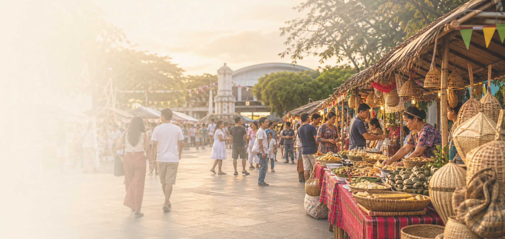

Lechon and grilled plates
Good for groups before evening programs. Choose places close to your next venue.
Visitor Guide
Food, stays, city movement, and side trips for visitors planning their time around Diyandi.

Your festival field guide
Keep your itinerary simple: choose where you will eat, where you will sleep, how you will move, and what you will explore outside the busiest event windows.
Eat
Good for groups before evening programs. Choose places close to your next venue.
A practical, filling stop between events when you do not want a long sit-down meal.
Try proben, barbecue, and festival bites from busy, clean stalls.
Look for local sweets, rice cakes, peanuts, and easy-to-carry market finds.

Stay
Best for short rides to plazas, churches, public offices, and pickup points.
Confirm check-in times, parking, and late-night access before booking.
Useful for longer visits, children, elders, and groups carrying more festival gear.

Move
Use familiar routes outside the busiest event windows and allow extra time.
Useful for short hops. Confirm your fare and drop-off point before boarding.
Park away from route closures and walk the final stretch on peak days.
Agree on one meeting place before the program begins.

Explore
A signature Iligan landmark and a strong first-time visitor stop.
Plan a half day and wear footwear suited for steps and wet ground.
A lighter nature stop when you want a less demanding side trip.
Browse local texture, snacks, and everyday city life between events.
Ready to map your festival route?
Open the event schedule